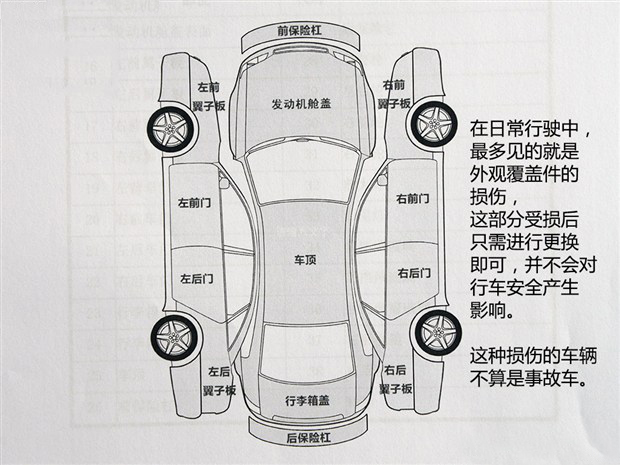
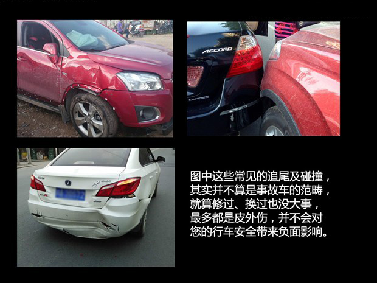

二手车市场车辆繁多 应当该如何挑选
对于选购二手车而言，怎样识别一台车是否有过事故确实不易，给大家分享一些挑选二手车外观及一些主要的部分的辨别方法。本期，我们就再和大家聊聊“事故车”这件事。我们怎么界定事故车？哪些损伤不能算是事故车？事故车到底能不能买等等。在最后，我们还会和大家分享一些在选购二手车过程中，你还应该了解的“一些事”。
说明：本文中出现的事故车辆仅作为讲解案例使用，并非已经进入流通渠道进行出售的二手车，请大家知晓。
一、我们怎么界定“事故车”及案例介绍
简言意赅，一辆车的结构部件（文中所指：纵梁、悬架系统、前后防撞钢梁、吸能盒等核心框架）、车架（车身骨架、结构部件，不含外观覆盖件），这些部分如果因为碰撞导致拉伸、形变、损坏的情况（在受到冲击时，结构部件表面也许看不出明显损伤，但是很可能冲击造成的伤害已经分散到车架的其它部位），就可以算是事故车了。这样的车辆我们不建议大家购买。一旦结构部件部分受损，就算通过拉伸、敲打或者其它方式修复了，也无法恢复其整体的车身刚性，如果再次发生碰撞很可能就会“散架”了。

反之，如果是车身的覆盖件受损或发生碰撞，只要没有伤及结构部件的部分，就不会影响行驶安全，就算修复过或者更换过也没事。我们可以将覆盖件理解为车辆的“外衣”，损坏后可以通过更换原厂配件来进行更换，而结构部件则不同，不能随便就拆下进行更换，一旦受损就是不可逆的。两者的区别大家要搞清楚。
 在接下来的内容中，我们将通过几个实例来为大家介绍如何判别真正的事故车，以及怎样程度的损伤才能算是事故车，这其中就包括车头结构部件严重受损的车辆、经受过严重追尾后被重新焊接修复的车辆等，希望借助本期的这几个实例让大家对于二手车的挑选可以有更深一步的认识。